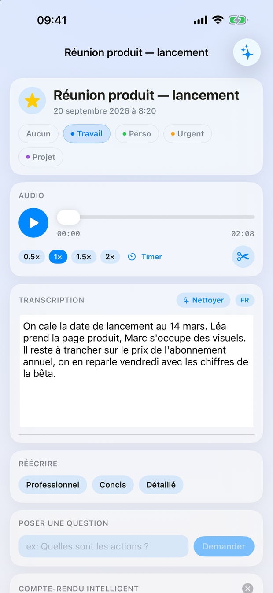
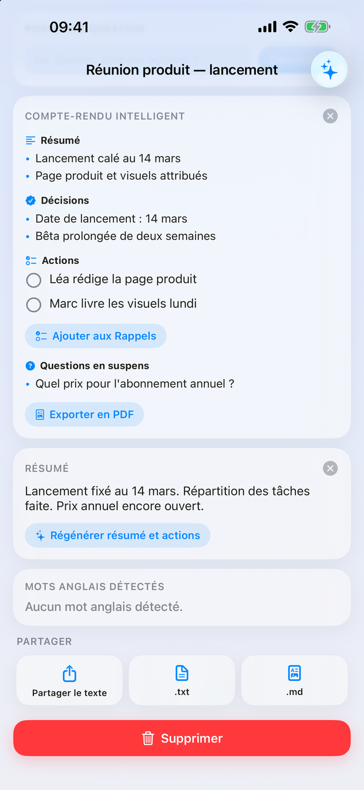
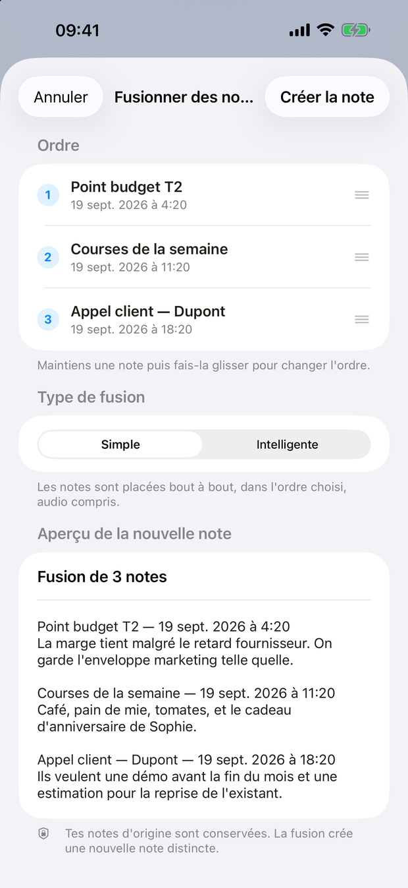

Bientôt sur l'App Store · iPhone et iPad
Enregistre une réunion, une idée ou un cours. NotaVox transcrit, résume, et fait ressortir les décisions et les actions.

Trois étapes
Tu appuies une fois. Le reste s'enchaîne pendant que tu passes à autre chose.
Un appui sur le bouton rouge. NotaVox capte la voix, affiche la forme d'onde et le minuteur ; l'écran peut se verrouiller.
La transcription arrive seule à la fin de l'enregistrement, avec un résumé et les actions repérées dans le texte.
Résumé, décisions, actions, questions ouvertes : quatre blocs à partager ou à envoyer dans Rappels.
Ce que fait l'app
Un appui pour lancer, rien à régler.
Quatre langues, détectées jusque dans une même phrase.
Le compte-rendu intelligent découpe une réunion en quatre blocs.
Enregistre au poignet, la note arrive sur l'iPhone.
Plusieurs notes éparses deviennent une seule note claire.
Une note se retrouve en quelques secondes, même six mois après.
Dans l'app



Les offres
Pas d'abonnement, pas de crédits à recharger. L'achat est lié à ton identifiant Apple et te suit sur tes appareils.
Gratuit
Tout ce qu'il faut pour enregistrer, transcrire et relire.
4,99 €une seule fois
Le compte-rendu intelligent, propulsé par Apple Intelligence.
Ces trois fonctions demandent Apple Intelligence (iOS 26 sur un appareil compatible). Sur un appareil qui ne le gère pas, l'app l'indique et ne propose pas l'achat.
Confidentialité
Enregistrements, transcriptions et tags vivent sur ton appareil. NotaVox n'a pas de serveur : rien ne m'est envoyé.
La reconnaissance vocale d'Apple traite l'audio sur l'appareil ou sur ses serveurs selon la langue. C'est écrit noir sur blanc dans la politique.
Le compte-rendu, la reformulation et les questions/réponses s'exécutent en local, via le modèle du système.
Support
Une question, un bug, une idée :
sramezani52@gmail.comRéponse sous 2 à 3 jours ouvrés, en français ou en anglais.
Dans l'app, sur ton appareil. NotaVox n'a pas de serveur : rien n'est envoyé au développeur. Supprimer une note supprime son fichier audio ; désinstaller l'app supprime tout.
Cette fonction utilise Apple Intelligence, qui demande iOS 26 sur un appareil compatible. Ailleurs, la carte reste visible mais indique que la fonction n'est pas disponible, et l'achat n'est pas proposé : tu ne peux jamais payer pour une fonction que ton appareil ne peut pas exécuter.
Ouvre l'écran du compte-rendu intelligent et touche « Restaurer les achats ». L'achat est lié à ton identifiant Apple : il te suit sur tous tes appareils, sans repayer.
Ouvre NotaVox sur la montre et touche le micro. À l'arrêt, l'enregistrement part vers l'iPhone, qui le transcrit et crée la note — même si l'app y est fermée. Si le téléphone est loin, le transfert attend et repart tout seul. L'enregistrement au poignet fait partie de l'achat intégré.
Deux endroits : le sélecteur sur l'écran d'enregistrement, pour une note en particulier, et Réglages → Transcription → Langue par défaut, pour toutes les suivantes. La langue de l'interface se règle au même endroit, indépendamment de celle de l'appareil.
Elle utilise le service de reconnaissance vocale d'Apple, qui traite l'audio sur l'appareil ou sur les serveurs d'Apple selon la langue et le modèle disponible. Le compte-rendu intelligent, lui, s'exécute sur l'appareil.
Les achats passent par Apple, et les remboursements aussi : rends-toi sur reportaproblem.apple.com avec ton identifiant Apple. Écris-moi si ça bloque, je t'aiderai à monter la demande.